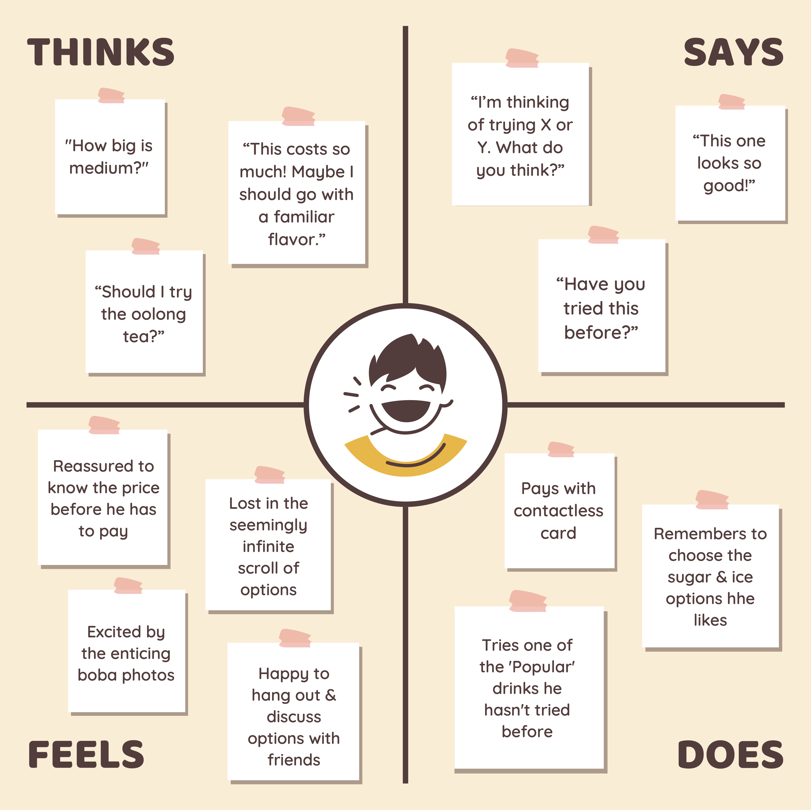

Timeline: Sep 2022; 1.5 weeks | Role: UX Researcher | Team: Solo
For this classic UI/UX project, I conducted user experience (UX) research by observing real users interacting with an interface in public view.
The area around Thayer Street of Brown University currently houses four boba shops: Vivi Bubble Tea, Kung Fu Tea, Ten One Tea House, and Tiger Sugar. I noticed that the two newest stores — Ten One and Tiger Sugar — have both opted to take orders through Snackpass' self-ordering kiosk instead of through employees. I decided to choose one of these boba self-ordering kiosks for this assignment because I was curious about what boba customers think about the interface (and wanted an excuse to have some boba catch-up sessions with friends).
Before diving into my findings, I'd like to provide two Figma mockups of the self-ordering kiosk at Ten One. Below, I highlight some important features of the interface as users browse and add items.
While observing my interviewees, I found that they:
To better understand the users of this interface, I prepared some questions that I believed would solicit insight about my interviewees’ expectations, experience, motives, and challenges when using the interface.
Excited Eli is a young professional who gets boba as an alternative to coffee when catching up with friends. He goes about once a month and has some boba preferences, but there are a lot of flavors the pique his curiosity.
Regular Rose is a college student who drinks boba two to three times per week with a mix of the same handful of friends. She knows what's good in each store she goes to, but likes to quickly scroll through the other options anyway.
From Jamie’s journey, we see ordering and drinking boba is most often the backdrop of a socially-driven activity. This means that it is important for the boba self-ordering interface to be quick & seamless to navigate because it is just a vehicle for the more important objective of spending time with friends.
I found this project great for developing my UX research skills. By mapping the user journeys of a public interface from beginning to end, I was able to build a comprehensive picture of various users' motivations, goals, and emotions. It is important to recognize the value in conducting thorough user reserach when creating and iterating though interfaces because my own goal as a UX Designer is to create experiences that are as easy and fun for end users as possible.